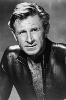

Country:United States, 85 minutes
Spoken languages:English
Genres:Comedy
Director(s):Ken Finkleman
Writer(s):Ken Finkleman
Video Codec:Unknown
Number: 2378


Certification:PG
Storyline:
A faulty computer causes a passenger space shuttle to head straight for the sun, and man-with-a-past, Ted Striker must save the day and get the shuttle back on track – again – all the while trying to patch up his relationship with Elaine.
Cast: 

Medium: VHS tape,
Loaned: No
Aspect ratio: Unknown